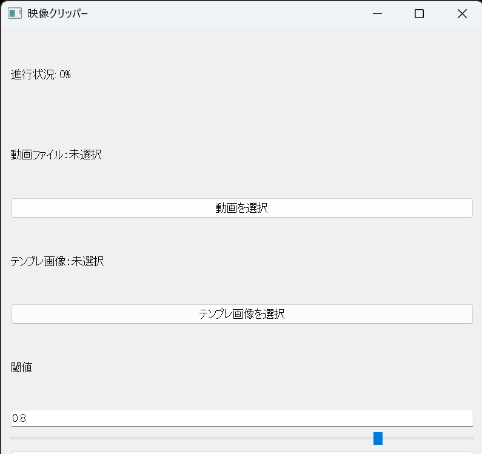

動画とテンプレ画像を選ぶ
MP4動画と、PNG/JPGのテンプレ画像をGUIから選択します。
- 動画：*.mp4
- テンプレ：*.png / *.jpg / *.jpeg
PyQt5 + OpenCVで、テンプレ画像が映った瞬間を検出し
MP4動画から自動でクリップを書き出す試作ツール。
任意のMP4動画に対して、特定のUI・アイコン・通知などの「見た目」をテンプレ画像として指定し、 動画内で一致度が閾値を超えたフレームを集めて、連続した区間をセグメントとしてまとめます。 そのセグメントを、個別のmp4として切り出して保存します。
これは試作ツールです
動作は確認できたものの、狙い通りに安定運用するには課題が残りました（詳細は後述）。

MP4動画と、PNG/JPGのテンプレ画像をGUIから選択します。
一致判定の閾値をスライダーで調整（0.00〜1.00）。 値が高いほど厳しめ判定、低いほど拾いやすい判定になります。
一致したフレームを連結してセグメント化し、clips/に連番で保存します。
main2.pyではQThreadを使い、処理中でもUIが固まりにくいようにしています。 進捗%もラベルに反映します。
この試作で厳しかった点は、主に次の2つです。
まとめると、「動く」けれど「狙い通りに、速く、ラクに」は達成できなかった、という結果です。
長いので、折りたたみ（開閉）形式で掲載します。
import sys
from PyQt5.QtWidgets import(
QApplication, QWidget, QVBoxLayout, QPushButton, QLabel, QFileDialog, QSlider, QLineEdit
)
from PyQt5.QtCore import Qt
from matcher import find_matching_segments, export_clips
class App(QWidget):
def __init__(self):
super().__init__()
self.setWindowTitle('MP4クリッパー')
self.setGeometry(100, 100, 400, 300)
# 初期値
self.video_path = None
self.template_path = None
self.threshold = 0.8
self.init_ui()
def init_ui(self):
layout = QVBoxLayout()
# 動画ファイルのラベルとボタン
self.video_label = QLabel('動画ファイル：未選択')
self.video_btn = QPushButton('動画を選択')
self.video_btn.clicked.connect(self.select_video)
# テンプレ画像のラベル・ボタン
self.template_label = QLabel('テンプレ画像：未選択')
self.template_btn = QPushButton('テンプレ画像を選択')
self.template_btn.clicked.connect(self.select_template)
# 閾値スライダー
self.threshold_label = QLabel('閾値')
self.threshold_input = QLineEdit('0.8')
self.threshold_input.setReadOnly(True)
self.threshold_slider = QSlider(Qt.Horizontal)
self.threshold_slider.setMinimum(0)
self.threshold_slider.setMaximum(100)
self.threshold_slider.setValue(int(self.threshold * 100))
self.threshold_slider.valueChanged.connect(self.update_threshold)
# 実行ボタン
self.run_btn = QPushButton('実行')
self.run_btn.clicked.connect(self.run_detection)
# 進捗%
self.progress_label = QLabel("進行状況: 0%")
layout.addWidget(self.progress_label)
layout.addWidget(self.video_label)
layout.addWidget(self.video_btn)
layout.addWidget(self.template_label)
layout.addWidget(self.template_btn)
layout.addWidget(self.threshold_label)
layout.addWidget(self.threshold_input)
layout.addWidget(self.threshold_slider)
layout.addWidget(self.run_btn)
self.setLayout(layout)
def select_video(self):
file, _ = QFileDialog.getOpenFileName(self, '動画ファイルを選択', '', 'MP4 files (*.mp4);;すべてのファイル (*.*)')
if file:
self.video_path = file
self.video_label.setText(f"動画ファイル: {file}")
def select_template(self):
file, _ = QFileDialog.getOpenFileName(self, 'テンプレ画像', '', '画像ファイル (*.png *.jpg *.jpeg);;すべてのファイル (*.*)')
if file:
self.template_path = file
self.template_label.setText(f"テンプレ画像: {file}")
def run_detection(self):
if not self.video_path:
print('error: 動画ファイルが選ばれていません')
return
elif not self.template_path:
print('error: テンプレ画像が選ばれていません')
return
else:
print(f"done: 動画: {self.video_path}")
print(f"done: テンプレ画像: {self.template_path}")
print("映像解析を始めます...")
segments = find_matching_segments(
self.video_path,
self.template_path,
threshold=self.threshold,
min_length=10,
progress_callback=self.update_progress
)
if not segments:
print("⚠️ 一致セグメントが見つかりませんでした。")
return
print(f"🎞 {len(segments)} 個のセグメントを検出しました。保存処理を開始します...")
export_clips(
self.video_path,
segments,
output_dir="clips"
)
print("✅ すべてのクリップを保存しました！clips/フォルダを確認してください。")
self.update_progress(100.0)
def update_threshold(self, value):
self.threshold = value / 100.0
self.threshold_input.setText(f"{self.threshold:.2f}")
def update_progress(self, percent):
self.progress_label.setText(f"進行状況: {percent:.1f}%")
if __name__ == '__main__':
app = QApplication(sys.argv)
win = App()
win.show()
sys.exit(app.exec_())import sys
from PyQt5.QtWidgets import (
QApplication, QWidget, QVBoxLayout, QPushButton, QLabel,
QFileDialog, QSlider, QLineEdit
)
from PyQt5.QtCore import Qt, QThread, pyqtSignal
from matcher import find_matching_segments, export_clips
class WorkerThread(QThread):
progress = pyqtSignal(float)
finished = pyqtSignal()
error = pyqtSignal(str)
def __init__(self, video_path, template_path, threshold):
super().__init__()
self.video_path = video_path
self.template_path = template_path
self.threshold = threshold
def run(self):
try:
segments = find_matching_segments(
self.video_path,
self.template_path,
threshold=self.threshold,
min_length=10,
progress_callback=self.progress.emit
)
if not segments:
self.error.emit("一致セグメントが見つかりませんでした。")
return
export_clips(self.video_path, segments, output_dir="clips")
self.finished.emit()
except Exception as e:
self.error.emit(str(e))
class App(QWidget):
def __init__(self):
super().__init__()
self.setWindowTitle('MP4クリッパー')
self.setGeometry(100, 100, 400, 350)
self.video_path = None
self.template_path = None
self.threshold = 0.8
self.init_ui()
def init_ui(self):
layout = QVBoxLayout()
self.video_label = QLabel('動画ファイル：未選択')
self.video_btn = QPushButton('動画を選択')
self.video_btn.clicked.connect(self.select_video)
self.template_label = QLabel('テンプレ画像：未選択')
self.template_btn = QPushButton('テンプレ画像を選択')
self.template_btn.clicked.connect(self.select_template)
self.threshold_label = QLabel('閾値')
self.threshold_input = QLineEdit('0.8')
self.threshold_input.setReadOnly(True)
self.threshold_slider = QSlider(Qt.Horizontal)
self.threshold_slider.setMinimum(0)
self.threshold_slider.setMaximum(100)
self.threshold_slider.setValue(int(self.threshold * 100))
self.threshold_slider.valueChanged.connect(self.update_threshold)
self.run_btn = QPushButton('実行')
self.run_btn.clicked.connect(self.run_detection)
self.progress_label = QLabel("進行状況: 0%")
layout.addWidget(self.video_label)
layout.addWidget(self.video_btn)
layout.addWidget(self.template_label)
layout.addWidget(self.template_btn)
layout.addWidget(self.threshold_label)
layout.addWidget(self.threshold_input)
layout.addWidget(self.threshold_slider)
layout.addWidget(self.run_btn)
layout.addWidget(self.progress_label)
self.setLayout(layout)
def select_video(self):
file, _ = QFileDialog.getOpenFileName(self, '動画ファイルを選択', '', 'MP4 files (*.mp4);;すべてのファイル (*.*)')
if file:
self.video_path = file
self.video_label.setText(f"動画ファイル: {file}")
def select_template(self):
file, _ = QFileDialog.getOpenFileName(self, 'テンプレ画像を選択', '', '画像ファイル (*.png *.jpg *.jpeg);;すべてのファイル (*.*)')
if file:
self.template_path = file
self.template_label.setText(f"テンプレ画像: {file}")
def update_threshold(self, value):
self.threshold = value / 100.0
self.threshold_input.setText(f"{self.threshold:.2f}")
def update_progress(self, percent):
self.progress_label.setText(f"進行状況: {percent:.1f}%")
def run_detection(self):
if not self.video_path:
print('error: 動画ファイルが選ばれていません')
return
if not self.template_path:
print('error: テンプレ画像が選ばれていません')
return
self.progress_label.setText("進行状況: 0%")
self.worker = WorkerThread(
self.video_path,
self.template_path,
self.threshold
)
self.worker.progress.connect(self.update_progress)
self.worker.finished.connect(self.detection_finished)
self.worker.error.connect(self.detection_error)
self.worker.start()
def detection_finished(self):
self.update_progress(100.0)
print("✅ すべてのクリップを保存しました！clips/フォルダを確認してください。")
def detection_error(self, message):
print(f"❌ エラー発生: {message}")
if __name__ == '__main__':
app = QApplication(sys.argv)
win = App()
win.show()
sys.exit(app.exec_())import cv2
import numpy as np
import os
def group_frames(frames, min_length=10):
if not frames:
return []
segments = []
start = None
prev = -2
for idx in frames:
if idx != prev + 1:
if start is not None and prev - start + 1 >= min_length:
segments.append((start, prev))
start = idx
prev = idx
if start is not None and prev - start + 1 >= min_length:
segments.append((start, prev))
return segments
def find_matching_segments(video_path, template_path, threshold=0.8, min_length=10, progress_callback=None):
cap = cv2.VideoCapture(video_path)
template = cv2.imread(template_path, 0)
match_frames = []
total_frames = int(cap.get(cv2.CAP_PROP_FRAME_COUNT))
frame_idx = 0
while True:
ret, frame = cap.read()
if not ret:
break
gray = cv2.cvtColor(frame, cv2.COLOR_BGR2GRAY)
res = cv2.matchTemplate(gray, template, cv2.TM_CCOEFF_NORMED)
if np.max(res) >= threshold:
match_frames.append(frame_idx)
if progress_callback and frame_idx % 10 == 0:
percent = (frame_idx / total_frames) * 100
progress_callback(percent)
frame_idx += 1
cap.release()
return group_frames(match_frames, min_length)
def export_clips(video_path, segments, output_dir='clips', prefix='clip'):
cap = cv2.VideoCapture(video_path)
fps = cap.get(cv2.CAP_PROP_FPS)
width = int(cap.get(cv2.CAP_PROP_FRAME_WIDTH))
height = int(cap.get(cv2.CAP_PROP_FRAME_HEIGHT))
os.makedirs(output_dir, exist_ok=True)
for i, (start, end) in enumerate(segments):
cap.set(cv2.CAP_PROP_POS_FRAMES, start)
out_path = os.path.join(output_dir, f"{prefix}_{i+1}.mp4")
fourcc = cv2.VideoWriter_fourcc(*'mp4v')
out = cv2.VideoWriter(out_path, fourcc, fps, (width, height))
for _ in range(end - start + 1):
ret, frame = cap.read()
if not ret:
break
out.write(frame)
out.release()
cap.release()